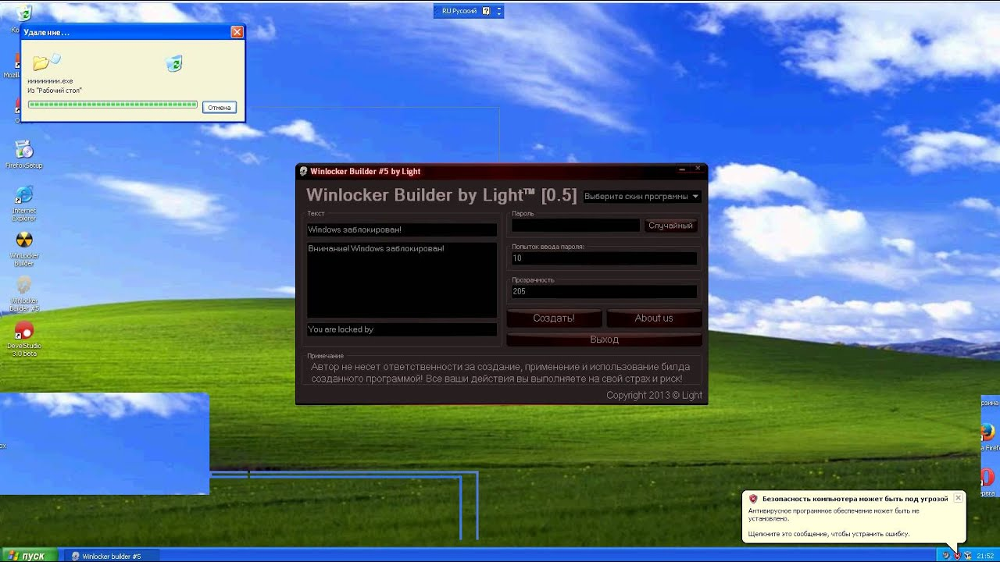

Вирус - Winlocker (Винлокер)
Вирус Винлокер - это вредоносное программное обеспечение, которое блокирует доступ к компьютеру или файлам и требует выкуп за разблокировку.
Как работает вирус Винлокер?
- Пользователь открывает вредоносную ссылку или вложение в электронном письме.
- Вирус загружается на компьютер и запускается.
- Вирус шифрует файлы на компьютере или блокирует доступ к операционной системе.
- На экране компьютера появляется сообщение с требованием выкупа.
